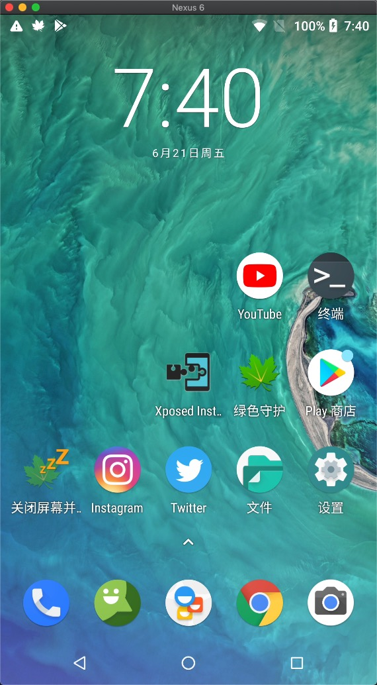

说到Android上投屏到PC或Mac端的软件，相信大家对Vysor应该都比较熟悉了，它是Chrome上的一款插件，安装完后就能方便的进行手机的投屏，但这款软件现在Pro版要收费了，免费版还一堆的广告。
今天我们要介绍的的是Genymobile自家开源的scrcpy工具，它也能实现我们想要的投屏功能，而且完全免费，没有任何广告，更重要的是它是一款开源软件！开源软件！开源软件！重要的事情说3遍。
在Mac上，通过Homebrew进行安装，等所有依赖下载完就可以使用了。
1 | brew install scrcpy |
通过adb connect或者USB数据线连接上电脑后，就可以进行投屏了，直接命令行运行scrcpy即可，Mac上运行起来的效果如下图。相比与Vysor，scrcpy是不需要安装任何APK的，方便快捷！

可是，如果手机上不安装个发送端，那么Mac接收端怎么接收录屏数据呢？这个时候，强烈的好奇心驱使我挖掘scrcpy的源码。让我们带着这个疑问，一步步的从源码中寻找答案。
从编译scrcpy说起
打开源码下的BUILD.md介绍文件，里面会有各个平台的的详细编译流程。
这里面分client和server端，其中client端是展示端，接收录屏数据并进行解码显示。源码位于app目录。全是c代码，里面用到了FFmpeg和SDL库，都是跨平台的解决方案。因此通过meson进行交叉编译后，就能实现展示端的跨平台，支持Linux/Windows/Mac OS/Docker等平台。
Tips：Meson是用于自动化构建的自由软件，使用Python语言编写，在Apache许可证 2.0版本下发布，主要目标是为了让开发者节约用于配置构建系统的时间。
server端就是发送端了，也就是我们的Android手机端，进行录屏后编码发送给展示端进行展示。源码位于server目录，下文我们的重点也会放在Android端源码的分析上面。奇怪了，不是说手机端上是没有安装任何apk的吗？那么这部分代码是怎么运行在Android平台上的呢？
继续打开server/meson.build文件查看server的编译流程（跟build.gradle一样，meson.build是meson编译所必须的脚本文件）
1 | # It may be useful to use a prebuilt server, so that no Android SDK is required |
可以看到里面通过运行build-wrapper.sh调用gradle编译了apk，并将apk最终输出名字改成了scrcpy-server.jar。
1 | ... |
执行scrcpy
上面编译生成的scrcpy-server.jar应该就是server端了，那它又是怎么在Android平台上运行起来的呢？通过跟踪client代码发现（源码在server.c），在scrcpy运行的时候，会执行push_server()函数，将scrcpy-server.jar通过adb push到Android的/data/local/tmp/scrcpy-server.jar目录下。
1 | ... |
然后通过server.c中的execute_server()方法，执行app_process指令将server端运行起来。
1 | static process_t |
关于app_process
上面我们提到scrcpy-server.jar是通过app_process运行起来的，那么app_process又是什么鬼？app_process是启动zygote和其他Java程序的应用程序，它可以让虚拟机从main()方法开始执行一个Java 程序。具体的用法可以参考app_process源码中的注释：
1 | "Usage: app_process [java-options] cmd-dir start-class-name [options]\n"); |
与APP进程不同，通过app_process启动的进程可以在root权限和shell权限 (adb默认)下启动，也就分别拥有了调用不同API的能力。通常情况下shell权限启动的app_process 只能够调用一些能够完成adb本身工作的API，root权限启动的app_process进程则拥有更多权限，甚至能够调用系统signature保护级别的API及访问整个文件系统。
实际上不少adb命令都是对调用app_process进行了一些封装，这里举我们平时常用的am指令为例，我们在执行adb shell am的时候其实是执行了以下的脚本。通过app_process运行am.jar中com.android.commands.am.Am这个类的main()函数来完成具体操作。
1 | #!/system/bin/sh |
这里需要注意的是app_process只能运行原始dex文件，也可以接收包含classes.dex的jar包，如am.jar。这里scrcpy取巧直接用了编译apk的方式，再直接重命名为jar包，这样也可以被app_process运行。而且可以使用gradle方便的进行编译，直接在Android Studio中开发，调用原生API，像源码中的IRotationWatcher.aidl也可以直接生成相应的IPC Proxy类进行调用，省力又省心。
scrcpy-server.jar在adb下通过app_process运行起来后，默认就有了shell权限，像一些截屏、录屏、模拟按键点击等功能都可以直接使用，而且完全不需要任何权限的声明。
RTFSC
Server.main()
了解了编译与启动的方式后，我们终于可以开始分析scrcpy的源码了，从发送端的主入口com.genymobile.scrcpy.Server.main()方法开始看起。
1 | public static void main(String... args) throws Exception { |
这里，我们可以看到scrcpy总共有3条工作线程，分别为：
- main线程：将录屏数据编码并把视频流传输到展示端
- controller线程：接收展示端控制信息并进行响应（如：按键、鼠标等事件的处理）
- sender线程：发送设备信息到展示端（目前仅用于发送设备剪贴板的内容）
adb reverse和adb forward
其中通过DesktopConnection.open()方法根据tunnelForward进行发送端与接收端的服务连接。如果是adb forward设置端口转发的方式，则发送端作为服务器，初始化LocalServerSocket进行监听；否则若是adb reverse反向代理的方式，则通过LocalSocket链接到远程服务器，此时接收端作为服务器。关于adb forward和adb reverse的使用方式不在这里展开，有兴趣的可以自己搜索相关用法。
1 | public static DesktopConnection open(Device device, boolean tunnelForward) throws IOException { |
关于tunnelForward的值，在展示端源码server.c的enable_tunnel中，会尝试执行adb reverse指令，如果失败了则改为adb forward进行端口转发的方式，从实现上来看主要是发送端作为客户端还是服务端的区别。
1 | static bool |
录屏&编码
当连接建立起来后，就可以通过ScreenEncoder.streamScreen()方法开始进行录屏、编码与数据的发送了，以下为精简后的核心逻辑代码与流程解析。
1 | public void streamScreen(Device device, FileDescriptor fd) throws IOException { |
注意：这里的
SurfaceControl是对系统android.view.SurfaceControl的反射包装类。因为这个类属于系统隐藏API，客户端无法直接调用，wrappers包下的类基本全都是通过这种方式进行调用的。
发送数据
了解完录屏数据的获取以及如何与编码器绑定后，我们来看下怎么拿到编码后的数据及发送，这个时候来看下encode()方法。
1 | private boolean encode(MediaCodec codec, FileDescriptor fd) throws IOException { |
看到这里，发送端的录屏数据采集、编码及发送就结束了。剩下的流程就是展示端接收并通过FFmpeg解码H.264数据，再通过SDL展示每一帧数据的过程了。
按键事件处理
前面我们有留意到scrcpy是通过controller线程来接收展示端控制信息并进行响应，具体是如何进行的呢？关键的代码在Controller.control()方法中：
1 | public void control() throws IOException { |
关于事件的注入，在handleEvent()方法里面调用了一系列的injectXXX()方法，都是先转换为KeyEvent和MotionEvent，最终调用到InputManager.injectInputEvent()方法中。这里跟上面的SurfaceControl一样，都是通过反射的方式调用到injectInputEvent()方法。
1 | public final class InputManager { |
至此，scrcpy的源码分析差不多就结束了。从scrcpy的编译，再到执行scrcpy命令，通过app_process启动scrcpy-server.jar，最后到发送端的网络连接、录屏、编码、发送流数据和按键处理。我们把scrcpy的整个流程分析了一遍。希望看完这篇文章后，能对大家有所帮助~